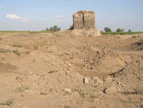
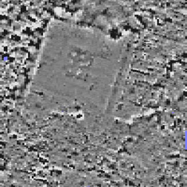

|
A temple is
known to have existed at Kom Firin since Flinders Petrie published
a brief description in 1888, referring to a double temple enclosure,
limestone-paved avenues and sphinxes. Unfortunately, Petrie did
not draw any plans or make photographic records of the site. Only
one segment of a temple enclosure wall still stands (pictured
right).
The visible
remnants of the temple itself amount to a series of uninscribed
limestone column bases and column drums, strewn across a low-lying
area of the site. The present topography of this area is partly
the result of Shafiq Farid's excavations between 1949 and 1951.
This yielded a series of fine reliefs, door-jambs and lintels, featuring
the titulary of Ramses II, but also depicting officials and priests
from his reign. This material is now in the Cairo Museum.
|

Standing
segment of a temple enclosure wall. The disturbed earth in the
foreground is the result of illicit field creation in September
2003.
|
|
A programme
of magnetometry survey was undertaken in 2003 and 2004, in collaboration
with the Archaeological Geophysics Laboratory at the University
of Akron, Ohio (USA). Magnetometry survey records subtle variations
in the earth's magnetic field, which can then be presented as a
map using computer modelling software. Features such as mud-brick
walls, fired material and metal have different magnetic properties,
thus it is often possible to recognise sub-surface structures. Magnetometry
offers a time- and cost-effiecient method of investigating aspects
of an ancient site.
The 2003 survey
of the temple area revealed the orientation of the temple, and the
position of further column base emplacements. Several internal walls
are also discernible.
|

Magnetometry
survey of the temple area. The area represented is 100x100m, with
north at the top of the image.
|